IT Company
This IT company specializes in the development of websites and digital projects for clients, as well as creating its own in-house products. As part of our collaboration, I worked extensively on the brand identity — developing a distinctive visual style and ensuring its consistent presence across all brand touchpoints.
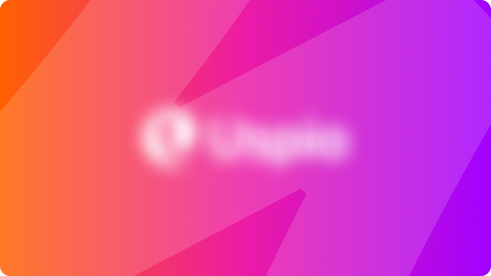
SMM & Branding
The task was to create the company’s SMM presence and branding from scratch for positioning in the media space. At the time, the company already had a website that served as a starting point, along with an established brand color palette. The existing visual language was refined and adapted for social media.
The foundation of the visual identity was a technological purple, complemented by orange and dark purple for accent posts. The brand already featured 3D elements and glassmorphism, which were integrated into the overall concept of the social media feed to create a cohesive and recognizable visual system.
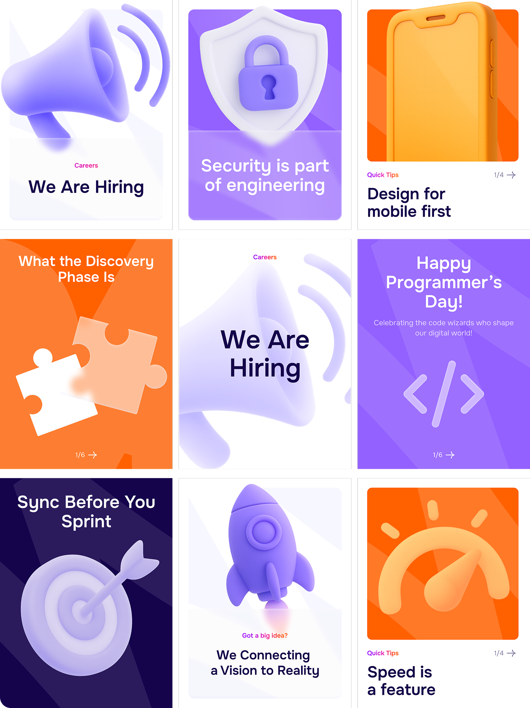
Process
Since there were several types of elements that needed to work organically within the feed, while also providing the marketing team with enough variety, the main goal was to create a universal template system for efficient collaboration with the marketing department. The workflow was structured step by step and organized through a table.
1. Reference research
A detailed analysis of competitors and current visual trends helped identify the most suitable compositions and maintain a relevant design direction.
2. Post categorization
Posts were divided into categories and labeled with tags. This allowed the marketing team to easily navigate the table and select a composition that matched the purpose of each post.
3. Systematizing graphic techniques
The client provided a wide range of requirements for graphic treatments, which needed to be structured into a coherent system. For each technique, a suitable composition from the previous step was selected.
4. Creating post templates
The final templates combined the selected compositions with the corresponding graphic techniques, creating a flexible and consistent visual system.
5. Marketing team workflow
The marketing team can easily choose the required post category and graphic technique directly from the table, and use the corresponding template for each publication.
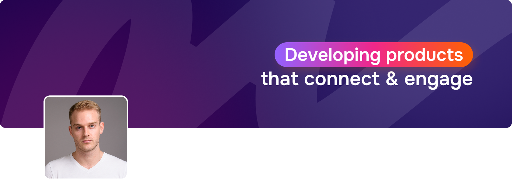
Digital Articles
One of the projects that demonstrates the wide application of the graphic style and brand identity was the creation of digital articles for the company’s employees. The main principle of the articles was a newspaper-inspired layout with a corresponding column structure.
The example shows a schematic application of this layout, along with several new graphic techniques introduced to further develop the visual style.
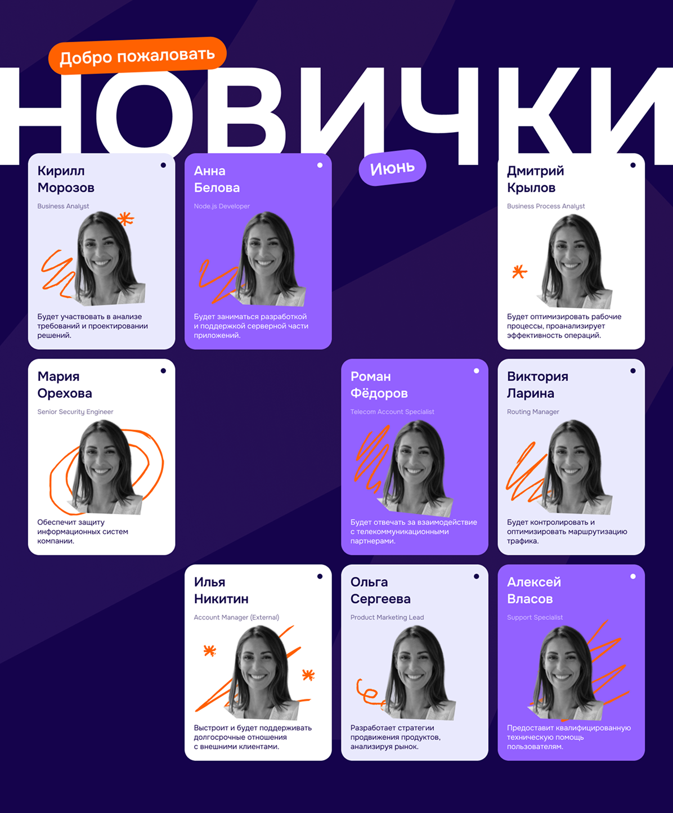
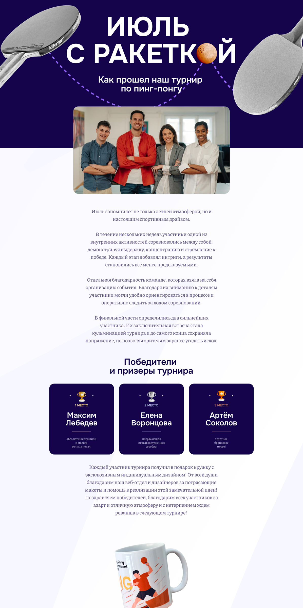
Presentation
Unique templates for presentations and other office materials were also created for the company. A modern approach to presenting information and infographics was chosen.
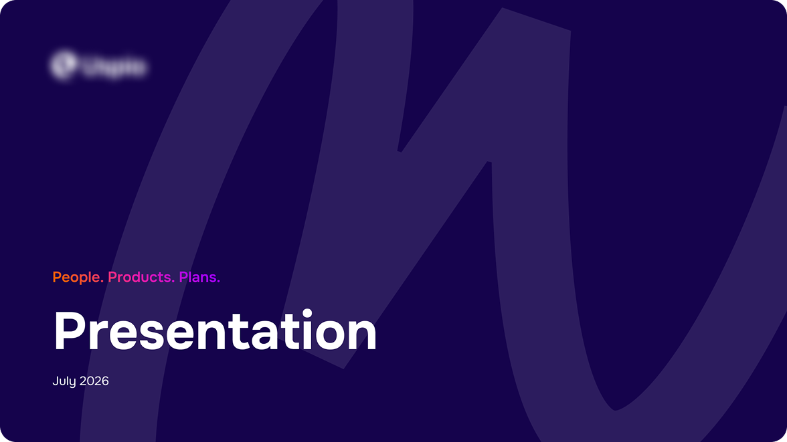
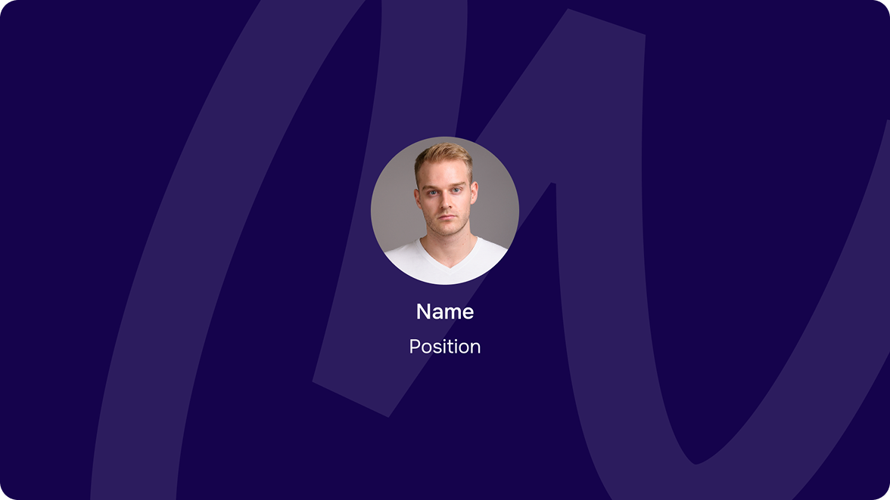
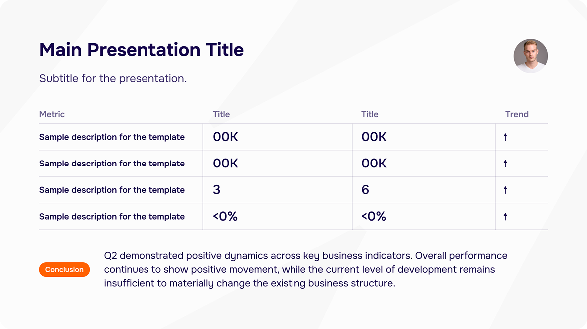
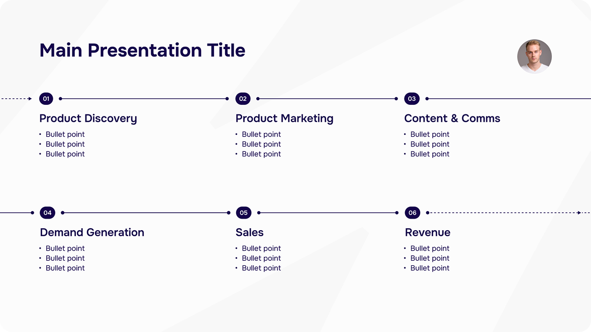
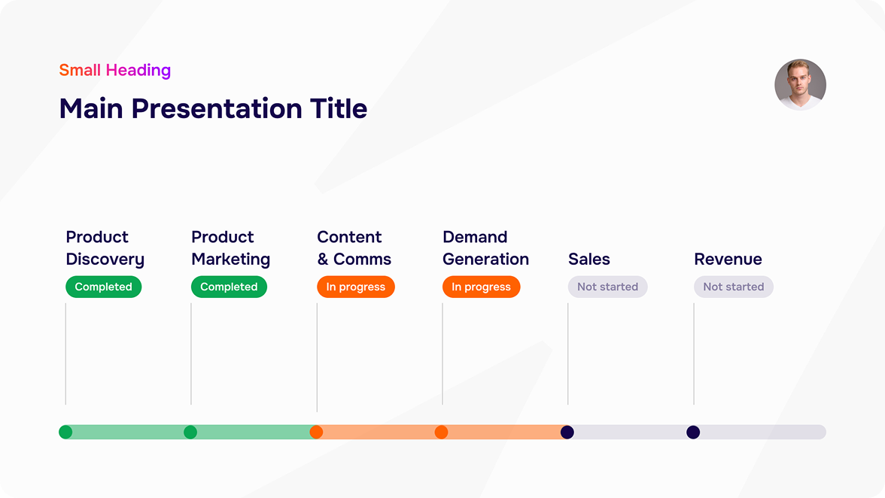
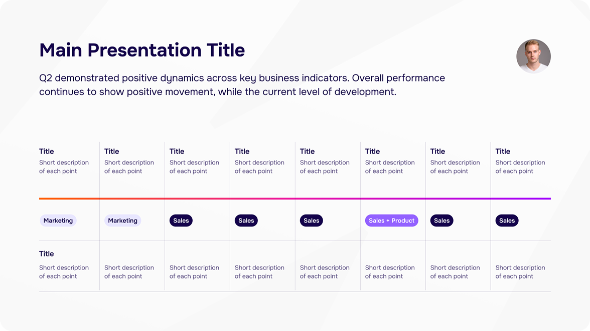
Let's discuss the project